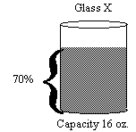
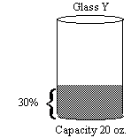
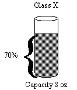

Q. The capacity of glass X is 80 percent of the capacity of glass Y. Further, Glass X is 70 percent full, and glass Y is 30 percent full. Glass X contains how many more ounces of punch than glass Y?
Scenario I (Glass X contains 5.2 more ounces than glass Y.)
 
Scenario II (Glass X contains 2.6 more ounces than glass Y.)

The answer is (E).